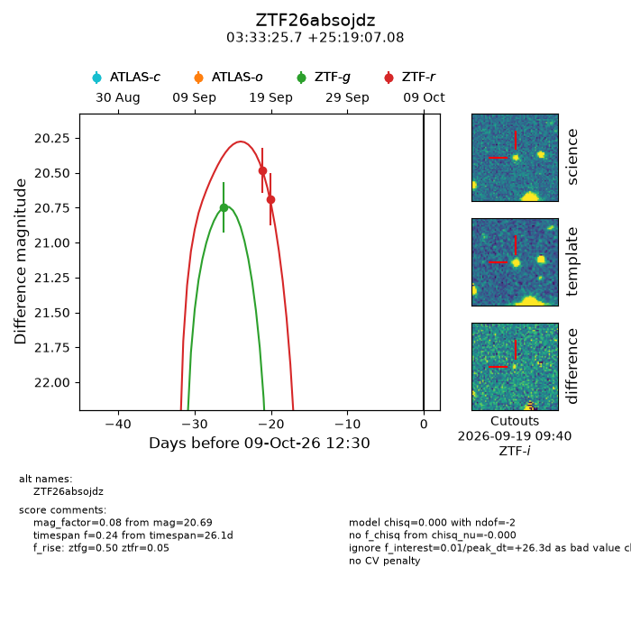
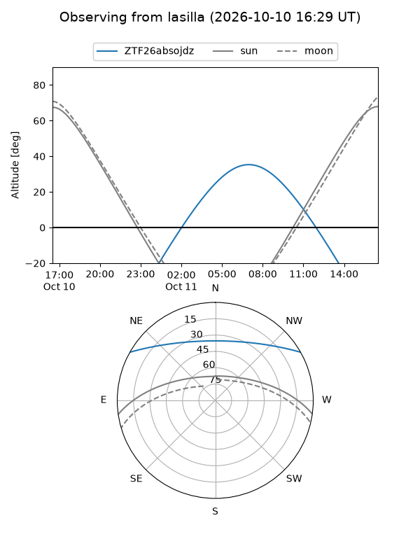
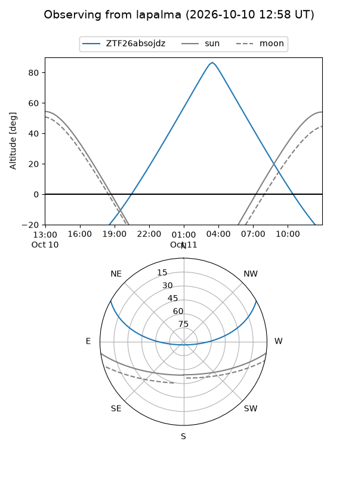
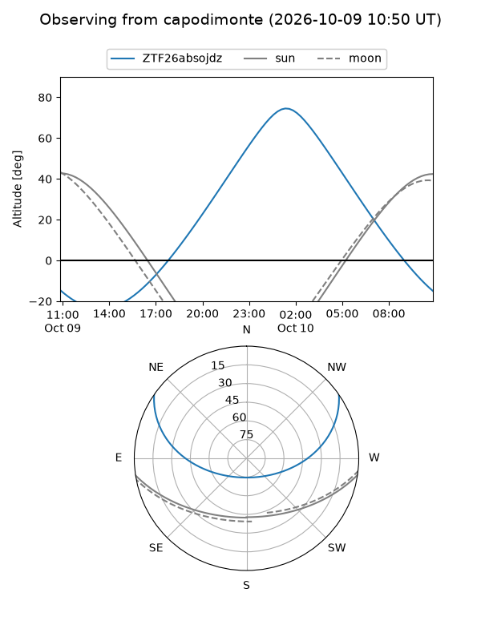
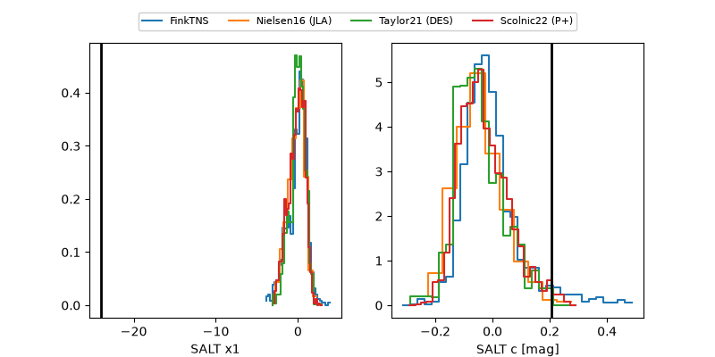

ZTF26absojdz
Target ZTF26absojdz at 2026-10-09 12:32
Aliases and brokers:
FINK-ZTF: ztf.fink-portal.org/ZTF26absojdz
Lasair-ZTF: lasair-ztf.lsst.ac.uk/objects/ZTF26absojdz
ALeRCE-ZTF: alerce.online/object/ZTF26absojdz
Direct TNS query: direct search
alt names
ZTF26absojdz (ztf,fink_ztf)
Coordinates:
equatorial (ra, dec) = 53.3569,+25.31863
equatorial (HMS+DMS) = 03:33:25.66,+25:19:07.08
galactic (l, b) = (163.1570,-24.63064)
Flags:
peak dt: +26.3
Photometry:
last ztfg=20.75, ztfr=20.69
1 ztfg, 2 ztfr detections
Lightcurve

Visibility



Additional plots
